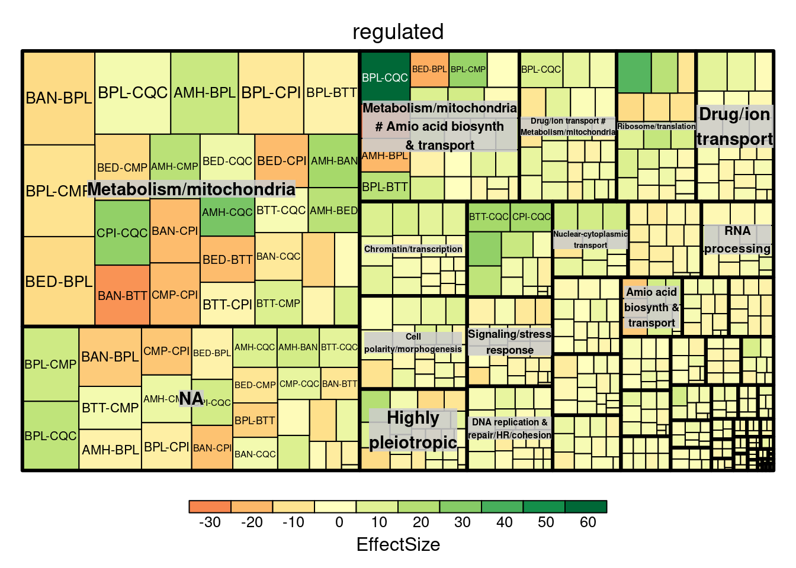
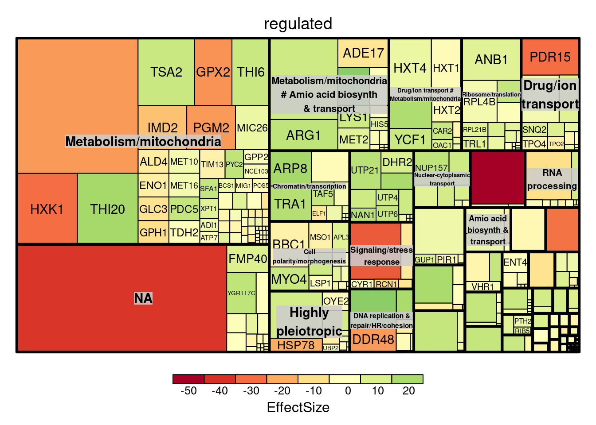

10 Functional analysis
10.1 Functional map for differentially expressed genes
library(treemap)
library(d3Tree)
treemap(df_dfe_annot, index=c("BIOPROCESS_all", "comparison"), vSize='regulated', vColor="EffectSize", type="value") 
treemap(df_dfe_annot, index=c("BIOPROCESS_all", "GENENAME"), vSize="regulated", vColor="EffectSize", type="value")
10.2 GO enrichment
library(enrichplot)
library(clusterProfiler)
library(org.Sc.sgd.db)
all_genes = int_scaled_strains %>%
as.data.frame() %>%
rownames_to_column('ID') %>%
left_join(sc_identifiers,by=c('ID'='UNIPROT')) %>%
dplyr::filter(!duplicated(GENENAME)) %>%
mutate(GENENAME=if_na(GENENAME,ID)) %>%
as_tibble() %>%
dplyr::select(where(is.character))
genes_proteomics = all_genes$ORF
genes_dfe = dfe_lfc$ORF
genes_dfe_list = df_dfe_annot %>% group_by(ORF) %>% summarize( mean_lfc = mean(EffectSize)) %>% arrange(desc(mean_lfc)) %>% pull(mean_lfc,ORF)
ego3 <- gseGO(geneList= genes_dfe_list, OrgDb = org.Sc.sgd.db, keyType = "ORF",
ont = "ALL", minGSSize = 20, maxGSSize = 500, pvalueCutoff = 0.05)
#> preparing geneSet collections...
#> GSEA analysis...
#> leading edge analysis...
#> done...
dotplot(ego3)
heatplot(ego3,foldChange = genes_dfe_list)
10.3 KEGG pathway enrichment
genes_proteomics_uni = all_genes$ID
genes_dfe_uni = dfe_lfc$ID
genes_dfe_list_uni = df_dfe_annot %>% group_by(uniprot) %>% summarize( mean_lfc = mean(EffectSize)) %>% arrange(desc(mean_lfc)) %>% pull(mean_lfc,uniprot)
kk2 <- gseKEGG(geneList = genes_dfe_list_uni, organism = 'sce', minGSSize = 20,
keyType = 'uniprot', pvalueCutoff = 0.05)
#> Reading KEGG annotation online:
#>
#> Reading KEGG annotation online:
#>
#> Reading KEGG annotation online:
#> preparing geneSet collections...
#> GSEA analysis...
#> leading edge analysis...
#> done...
dotplot(kk2)
heatplot(kk2, foldChange=genes_dfe_list_uni)10.4 GO enrichment for clusters of differentially expressed genes
genes_dfe_cluster = split(dfe_lfc$ORF,cl_prot)
genes_dfe_cluster_uni = split(dfe_lfc$ID,cl_prot)
ck_go <- compareCluster(geneCluster = genes_dfe_cluster, fun = enrichGO, universe=genes_proteomics,
OrgDb= org.Sc.sgd.db, keyType= "ORF", ont='ALL', pool=F,
pAdjustMethod = "BH", pvalueCutoff = 0.05)
dotplot(ck_go)